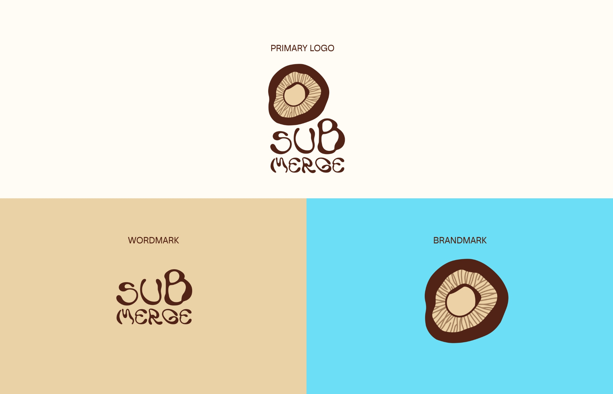
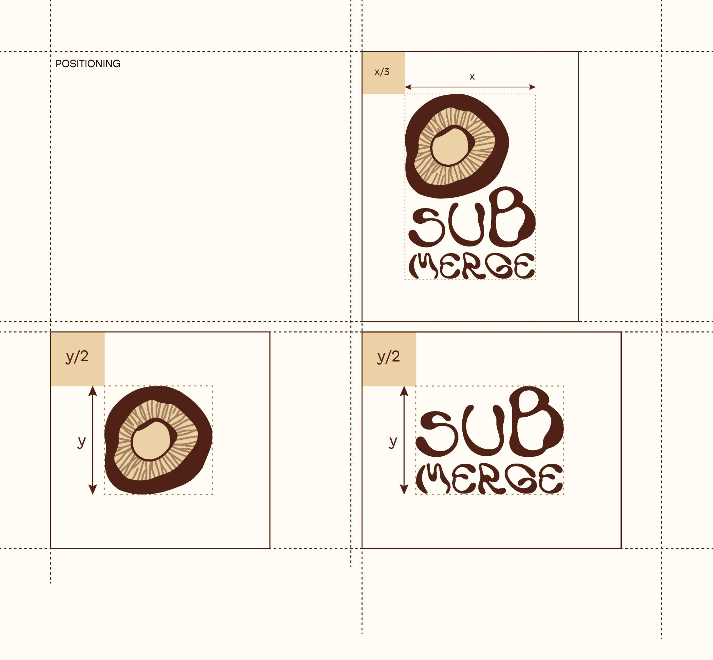
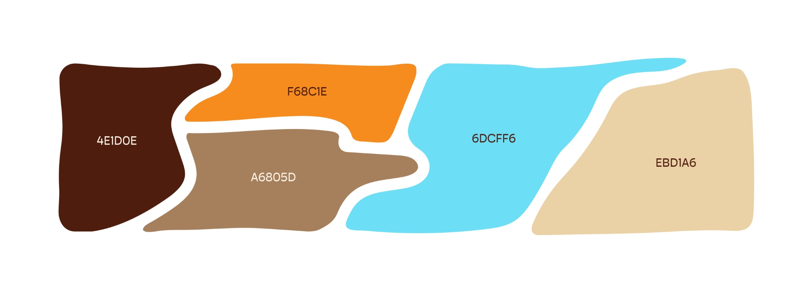
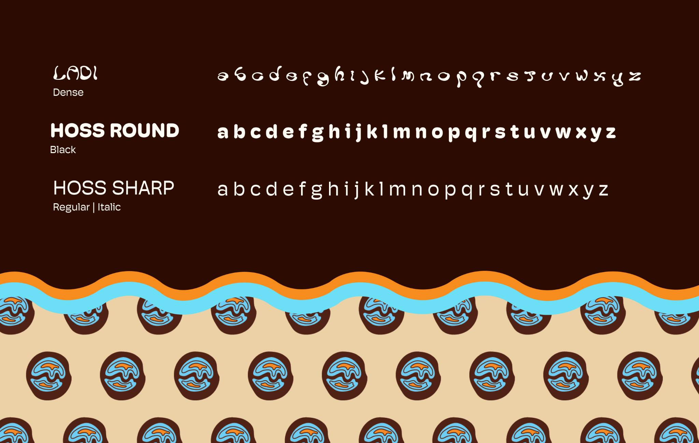
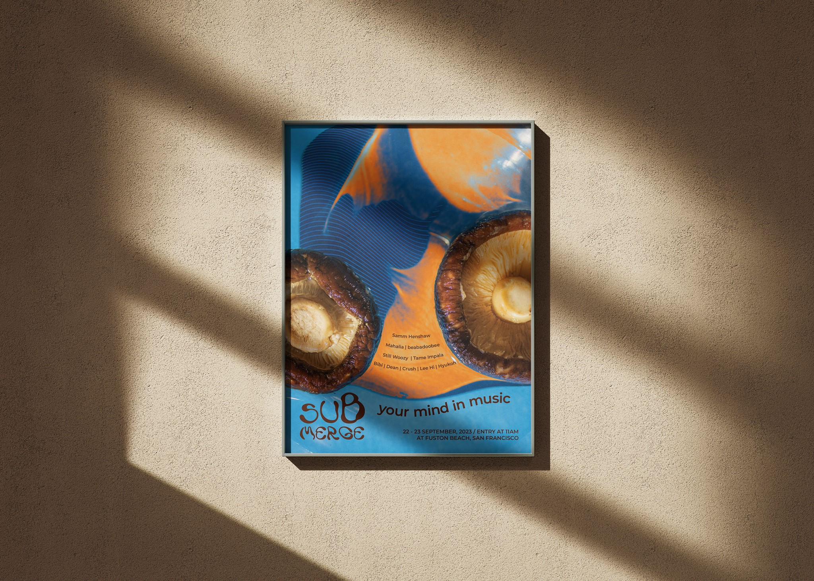
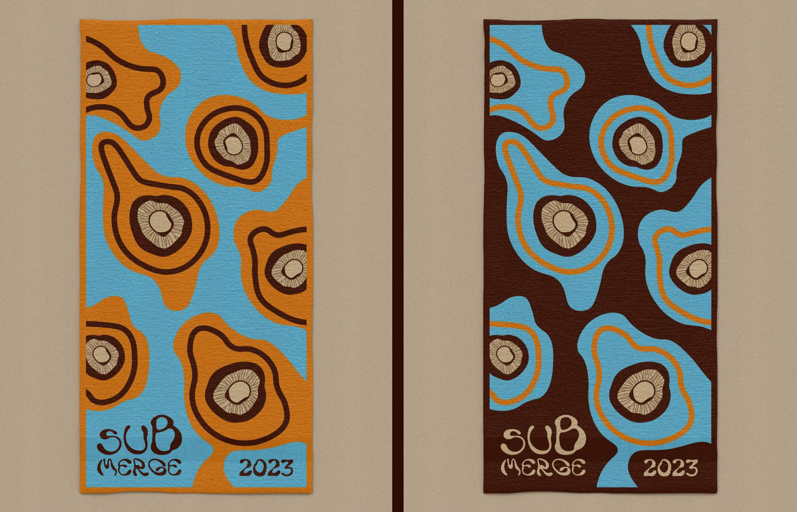
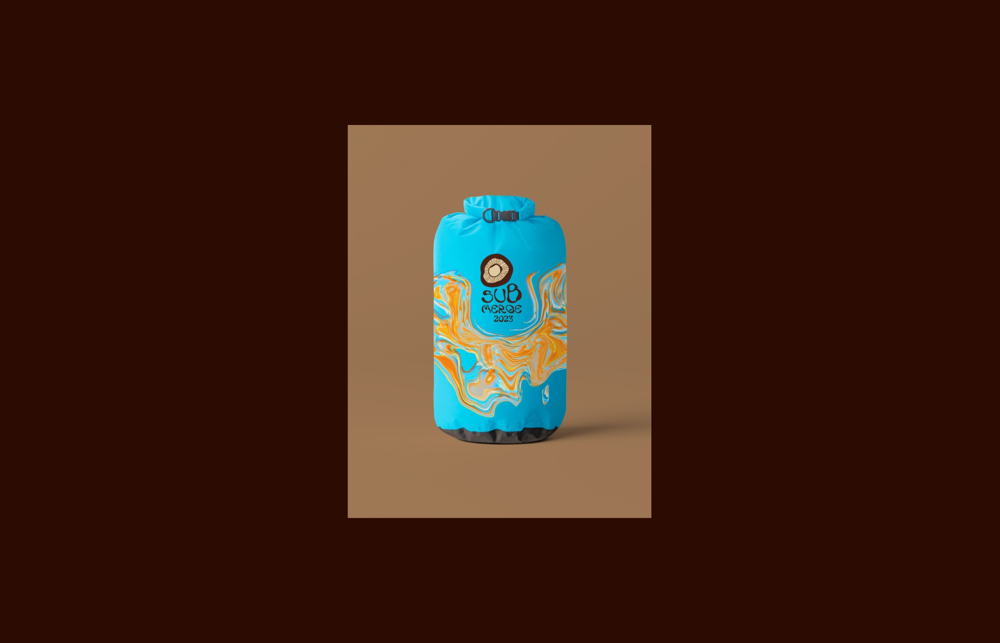
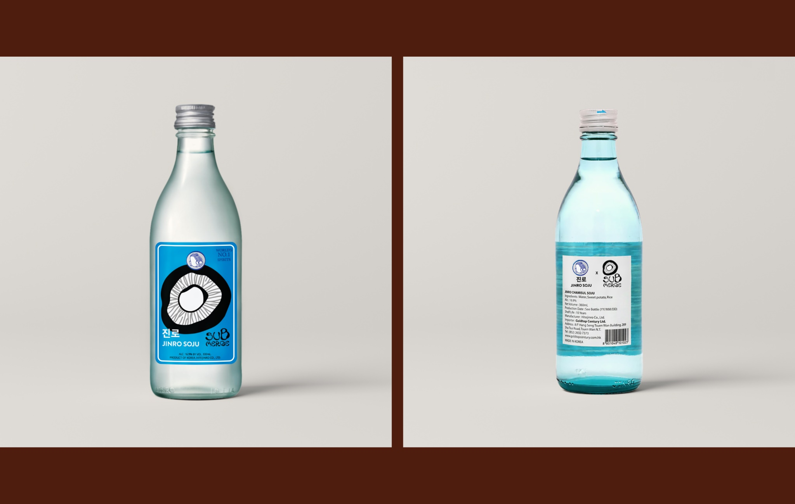
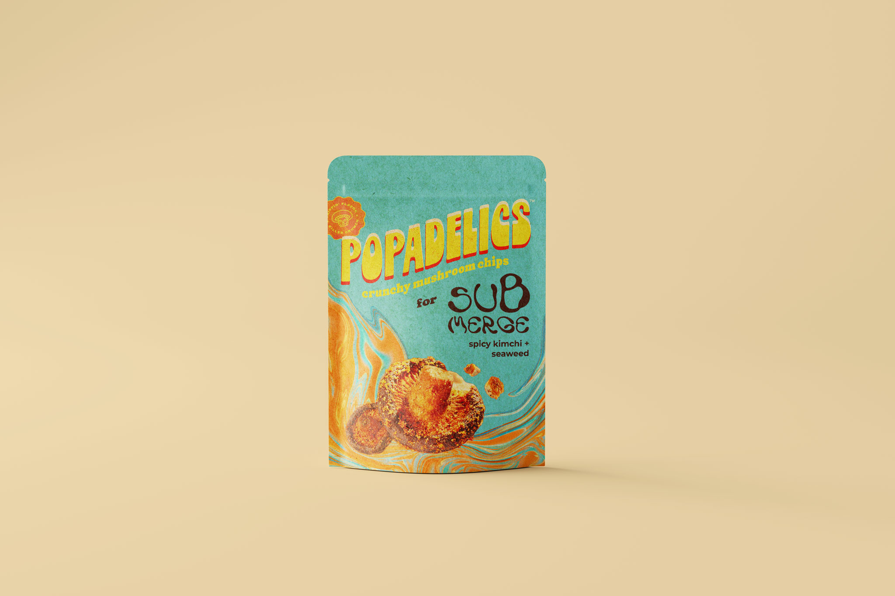

IDEATION
The Submerge festival will take place by the seaside and offer relaxing music. Therefore, after doing some brainstorming, I selected words like sunset, relax, fluid, and organic to best describe the mood of the festival.
Continuous sketching resulted in multiple logo ideas aligning with the perception of nature, alternative music, or psychedelic visuals.
LOGO
Finally, the final logo became a simplified illustration of a shiitake mushroom viewed from above. I decided on a shiitake mushroom as it is often used in Korean cuisine and it also requires to be submerged in water before cooking it.
The festival plays on the concept of submersion — offering a safe space where people can submerge in music and human connections.


COLOR AND TYPOGRAPHY
The color palette includes a collection of browns, an orange, and a light blue. The browns are reminiscent of a shiitake mushroom. Orange is evocative of the sunset, and blue of the water.

In terms of typography, I utilized Ladi for the wordmark of the logo design to achieve an organic, fun, and psychedelic look. Hoss Round is applied to headers with its roundness and friendliness. For its similar qualities, I selected Hoss Sharp as it’s more readable for smaller text.

POSTER
The poster for the festival features a mix of organic and modern characteristics. The water and the shiitake mushrooms symbolize the indie genre. While the graphic patterns and overlaid textures represent the modern Korean R&B genre.

MERCHANDISE
The festival merch will be items useful during the festival. A towel where you can lay down on or dry yourself after a quick swim. And, a water bag to protect your belongings from water and sand.


CO-BRANDING
Submerge collaborates with Jinro to sell a specially designed soju bottle, featuring the festival logo.

The second collaboration is with Popadelics, a shiitake mushroom snack. For the festival, a new flavor is temporarily offered — spicy kimchi and seaweed flavor.
